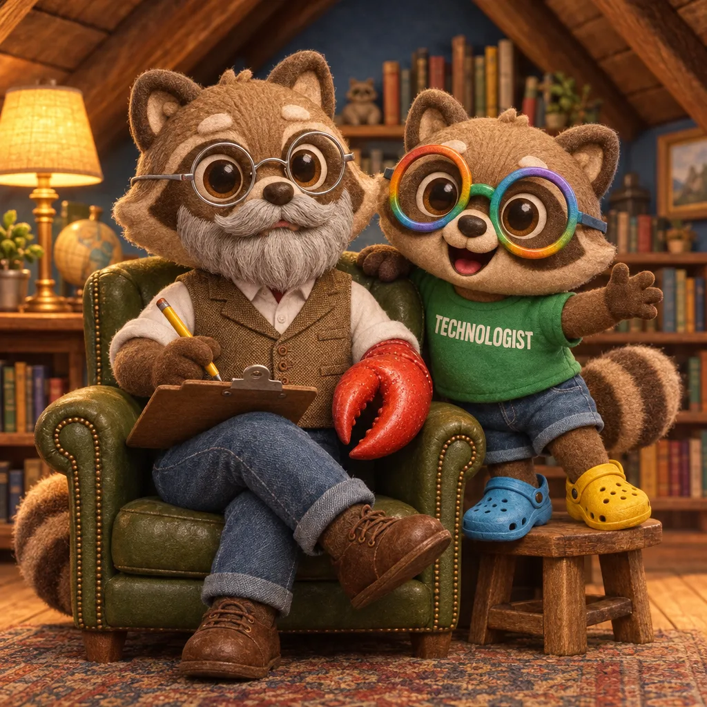

NOV 2026

GPT Image 2.6 FlareOpenRouter · openai
openai/gpt-image-2.6-flare · listed on OpenRouter 2026-11-04
replaces GPT Image 2.5 flare
$0.218 / image20.0 s4 refs
style ✓1 claw ✓beard ✓TECHNOLOGIST ✓Crocs ✓
Richest set, and three times faster than 2.5 flare. Twenty seconds instead of a minute, a little cheaper, and the warmest den of the round: globe, lamp, a tiny raccoon figurine on the shelf. Claw on Larry's correct (left) arm.